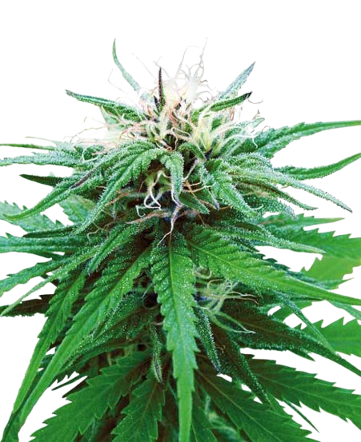
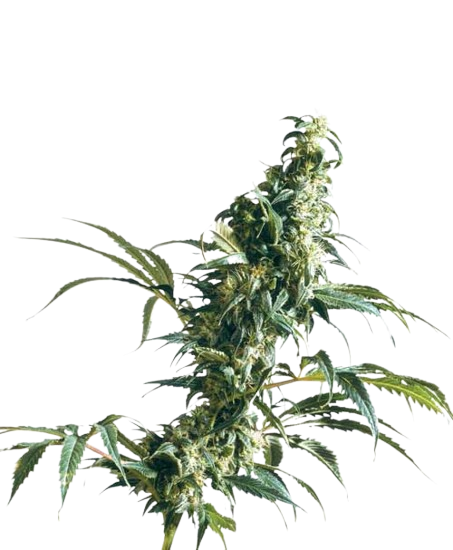

INDICA
กัญชาสายพันธุ์ Indica เป็นหนึ่งในสองสายพันธุ์หลักของกัญชาที่ได้รับความนิยมมากที่สุด (อีกสายพันธุ์คือ Sativa) ซึ่งมีคุณสมบัติที่แตกต่างจาก Sativa ในหลายๆ ด้าน ทั้งในแง่ของลักษณะของต้น การเติบโต และผลที่ได้จากการใช้กัญชาสายพันธุ์นี้
คุณสมบัติของกัญชาสายพันธุ์ Indica
ลักษณะของต้น: ต้น Indica มีลำต้นที่เตี้ยและกว้าง มีความสูงประมาณ 3-6 ฟุต ใบของต้น Indica จะมีลักษณะหนาและกว้างกว่า Sativa ดอกของ Indica มักจะหนาและหนักกว่า Sativa
ผลต่อร่างกายและจิตใจ: Indica มักจะให้ผลที่ทำให้รู้สึกผ่อนคลาย รู้สึกสบาย และบางครั้งอาจรู้สึกง่วงนอน ซึ่งทำให้มันเป็นตัวเลือกที่ดีในการใช้ในช่วงกลางคืน ผลของ Indica ช่วยในการบรรเทาอาการเจ็บปวด การคลายเครียด และการช่วยในการนอนหลับ ใช้บ่อยในกรณีของอาการนอนไม่หลับ (insomnia), ความเครียด, หรืออาการปวดเรื้อรัง
สรรพคุณทางการแพทย์: Indica ได้รับความนิยมในการรักษาอาการเจ็บปวด เช่น ปวดหลัง ปวดกล้ามเนื้อ และอาการปวดประสาท สามารถช่วยลดอาการวิตกกังวล และอาการเครียด โดยเฉพาะในกรณีของผู้ที่มีปัญหาทางจิตใจหรืออารมณ์ ช่วยให้หลับสบายและบรรเทาอาการนอนไม่หลับ บางสายพันธุ์ของ Indica ใช้ในการรักษาโรคต่างๆ เช่น มะเร็ง หรือการบำบัดอาการจากเคมีบำบัด
การเติบโต: ต้น Indica เติบโตได้เร็วและใช้เวลาปลูกสั้นกว่า Sativa มักจะมีระยะเวลาการเก็บเกี่ยวสั้น (ประมาณ 7-9 สัปดาห์) ทำให้เก็บเกี่ยวได้เร็วกว่า Sativa เหมาะกับการปลูกในพื้นที่ที่มีพื้นที่จำกัดหรือภายในโรงเรือน กลิ่นและรสชาติ: Indica มักจะมีกลิ่นที่หนักแน่นและมีรสชาติที่หวานหรือมีความกลมกล่อม เช่น กลิ่นดินหรือไม้ บางพันธุ์อาจมีกลิ่นที่หอมของผลไม้หรือเครื่องเทศ
ตัวอย่างของกัญชาสายพันธุ์ Indica ที่มีชื่อเสียง:
1.Afghan Kush: เป็นสายพันธุ์ที่มีต้นกำเนิดจากภูเขาหิมาลัย และมีผลทำให้รู้สึกผ่อนคลายและนอนหลับได้ดี
2.Northern Lights: เป็นสายพันธุ์ที่ได้รับความนิยมอย่างมากในวงการการแพทย์ ช่วยลดอาการปวดและเครียด
3.Granddaddy Purple: มีความเป็นเอกลักษณ์ในเรื่องของกลิ่นหอมหวานและผลที่ทำให้ผ่อนคลาย ช่วยในการบรรเทาความเครียดและอาการนอนไม่หลับ
4.Purple Kush: สายพันธุ์ที่มีชื่อเสียงในเรื่องของการบรรเทาอาการเจ็บปวดและทำให้รู้สึกผ่อนคลาย
SATIVA

กัญชาสายพันธุ์ Sativa เป็นอีกหนึ่งสายพันธุ์หลักของกัญชาที่มีความแตกต่างจากสายพันธุ์ Indica ในหลายๆ ด้าน ทั้งในเรื่องของลักษณะต้น การเจริญเติบโต และผลที่ได้จากการใช้ สายพันธุ์นี้มักจะมีลักษณะที่ทำให้ผู้ใช้รู้สึกกระปรี้กระเปร่า กระตือรือร้น และมีพลัง
คุณสมบัติของกัญชาสายพันธุ์ Sativa
ลักษณะของต้น:ต้น Sativa จะมีขนาดสูงและบางกว่า Indica โดยสามารถเติบโตได้ถึง 10-12 ฟุต (หรือสูงกว่านั้น)ใบของต้น Sativa มักจะยาวและแคบกว่า Indicaดอกของ Sativa มักจะมีขนาดเล็กและเบากว่า Indica และมักจะมีกลิ่นที่สดชื่นและหอม ใช้เวลาการเก็บเกี่ยวที่ยาวกว่า Indica ประมาณ 9-12 สัปดาห์
ผลต่อร่างกายและจิตใจ: Sativa จะให้ผลที่ทำให้รู้สึกกระปรี้กระเปร่า มีพลังและสามารถช่วยเพิ่มความสนุกสนาน มีผลกระตุ้นและช่วยเพิ่มสมาธิ ทำให้เหมาะกับการใช้งานในระหว่างวัน หรือเมื่อคุณต้องการพลังในการทำกิจกรรมต่างๆ อาจช่วยในการเพิ่มความคิดสร้างสรรค์และบรรเทาความเครียด การใช้ Sativa จะไม่ทำให้รู้สึกง่วงนอนเหมือน Indica และมักไม่ทำให้เกิดอาการ "สลึมสลือ"
สรรพคุณทางการแพทย์: Sativa มักจะใช้ในกรณีที่ต้องการบรรเทาความเครียด อาการซึมเศร้า หรืออาการวิตกกังวล สามารถช่วยเพิ่มพลังงานและการกระตุ้นทางจิตใจ เหมาะสำหรับผู้ที่มีอาการเหนื่อยล้าหรือขาดสมาธิ ใช้ในการรักษาอาการต่างๆ เช่น โรคซึมเศร้า โรควิตกกังวล โรคพาร์กินสัน และอาการที่เกี่ยวข้องกับการลดพลังงาน
การเติบโต: ต้น Sativa มักจะเติบโตได้ช้าและใช้เวลานานกว่าในการเจริญเติบโตและเก็บเกี่ยวเมื่อเทียบกับ Indica ช่วงการเติบโตของ Sativa จะยาวกว่า ประมาณ 9-12 สัปดาห์ ทำให้การเก็บเกี่ยวช้ากว่า เหมาะสำหรับการปลูกในพื้นที่ที่มีอากาศอบอุ่นและแดดมาก
กลิ่นและรสชาติ:Sativa มักมีกลิ่นหอมสดชื่นและรสชาติที่มีความเป็นธรรมชาติ เช่น กลิ่นของผลไม้ เช่น ซิตรัส หรือเครื่องเทศ มีรสชาติที่มักจะออกเปรี้ยวหรือหวาน พร้อมด้วยกลิ่นดอกไม้หอม